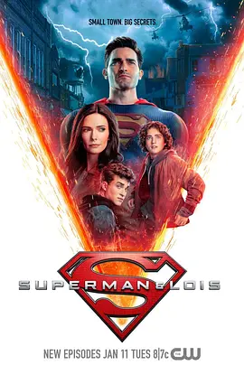

7.7
超人和露易丝 第二季
Superman & Lois Season 2
2022
美国
评分 7.7
导演:
格里高利·史密斯
演员:
泰勒·霍奇林 / 比茜·图诺克 / 亚历山大·加芬 / 乔丹·阿尔萨斯 / 沃尔·帕克斯
类型:
剧情,动作,科幻
剧情简介
新一季的斯莫维尔表面平静，却从开端便显露出异常的裂痕。克拉克在巡空时出现失序般的幻痛，似乎与地下某种无法解释的震动相呼应。他试图隐瞒异样，却难以在家庭生活与不断升级的威胁之间维持平衡。露易丝在报社继续推进调查，她的敏锐直觉让她意识到小镇深处正酝酿着一场陌生而危险的力量，而她揭开真相的决心也让家庭再次置于舆论和权力的夹缝中。乔丹逐渐察觉到父亲隐瞒的真相，与自身能力的波动相互交织，使他在青春的冲动与责任之间不断摇摆。他努力靠近酷儿，却一次次被现实撞得生痛；而乔纳森的世界也开始出现裂缝，曾经笃定的方向感被新同学、新压力和家庭秘密撕扯着。他们都在以各自的方式寻找位置，却无可避免被卷入更深的漩涡。与此同时，克拉克面对的敌意不再是单纯的力量对抗，而是一种足以撼动现实结构的威胁。小镇的土地开裂、光线扭曲，仿佛另一重世界正悄然侵蚀边界。克拉克奔走于灾难现场，试图压制这股难以名状的力量，而露易丝则从信息的碎片中拼凑出更完整的阴影。危机越逼近，家庭之间未说出口的矛盾也逐渐被推向前台，他们必须彼此信任，才能在不断崩塌的世界边缘站稳脚步。